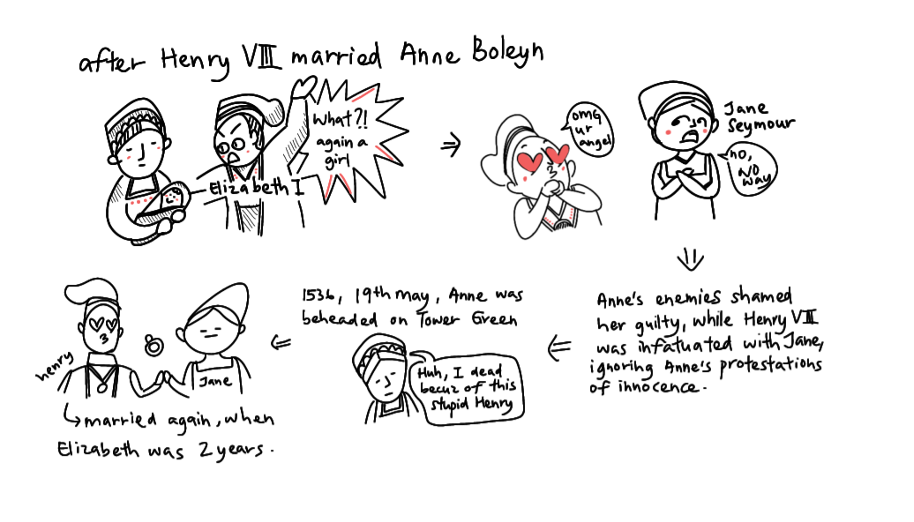
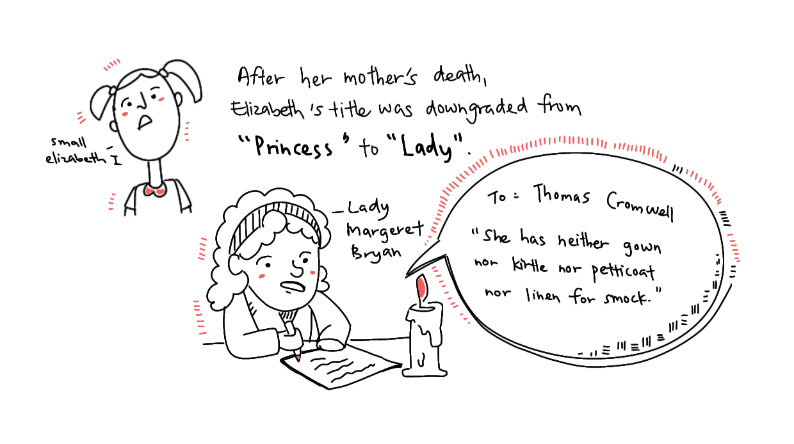
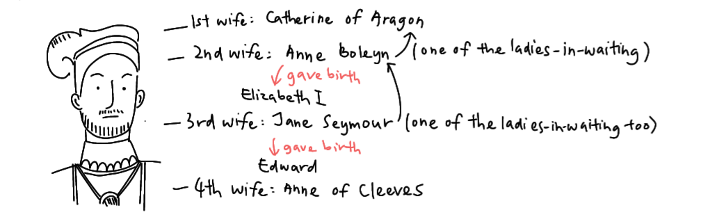
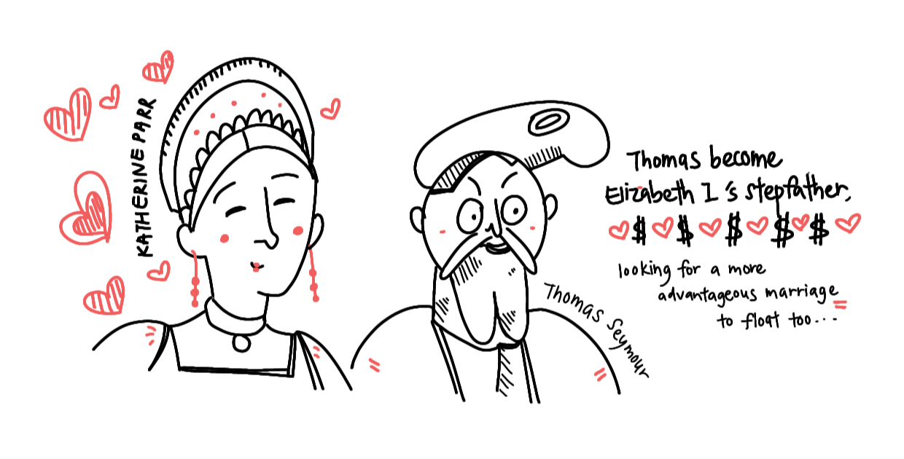
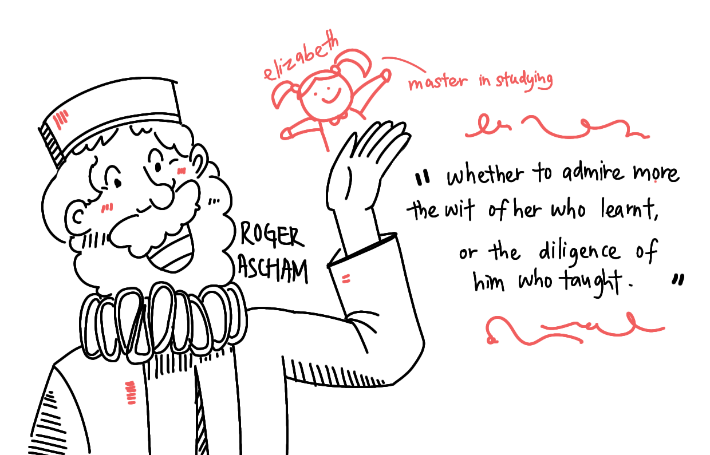

Go to top
Go to topChapter II: HER LIFE
Birth and Anne’s Execution
ELIZABETH WAS BORN at Greenwich Palace on 7 September 1533 and was named after her grandmothers, Elizabeth of York and Lady Elizabeth Howard. She was the second child of Henry VIII of England born in wedlock to survive infancy. Her mother was Henry's second wife, Anne Boleyn. At birth, Elizabeth was first in line to the English throne. Mary Tudor was cut from the line of succession after Catherine’s divorce from Henry.


HENRY AND ANNE BOLEYN
Henry’s marriage to Anne was not without its consequences. In the wake of the creation of the Church of England, Pope Clement excommunicated Henry VIII, a threat that carried far more severity than in the present day. Henry had turned the country upside down just to be with Anne. That meant the pressure on her to produce a healthy son was even heavier.
Unfortunately, just like her predecessor, Catherine of Aragon, Anne Boleyn only produced a single living daughter. Her other two pregnancies ended tragically in miscarriages or stillbirths.
Henry, growing more impatient, went after Jane Seymour. Jane was one of Anne’s ladies in waiting, a strong contrast to Anne’s headstrong personality.

JANE SEYMOUR
Additionally, Anne had made a few political enemies due to differing ideas regarding the reformation. When Henry VIII had dismantled the Catholic monasteries and had their riches confiscated, her former ally Thomas Cromwell arranged for the riches to be put in the national treasury, rather than be made available for charitable purposes as she had hoped.
Henry VIII was in love with Jane Seymour, who refused to become his mistress. Henry VIII, at the time, was still married to Anne. She had to go.
Thomas Cromwell then levelled multiple charges against Anne, including several cases of adultery, including one with her own brother. In addition, she was accused of witchcraft and treason by making plots against the king’s life. Henry VIII, notoriously prone to suspicion, and now besotted with Jane Seymour, ignored Anne’s protestations of innocence.

A sham trial filled with Anne’s enemies found her guilty, and she found herself a prisoner at the Tower of London, to await her execution.
Perhaps as a last act of mercy, Henry sent for a swordsman from Calais to behead her. Tudor executioners were well known for unsuccessful attempts during beheading, making the execution process a rather messy affair. A professional ensured a swift death. However, for the swordsman to have arrived on time before the execution, Henry VIII would have had to send for him while the trial was ongoing, further implying the outcome of the trial had already been decided.
On 19 May 1536, Anne was beheaded on Tower Green. It is said on the day of her execution, Henry had been playing tennis. He married Jane Seymour just 11 days later. Elizabeth was only 2 years and eight months old.

Despite losing her mother at an early age, Elizabeth seemed to hold a great deal of affection for her. This is largely proven in the speculations surrounding the Chequers ring. This was a ring Elizabeth wore often from its existence in the 1570s until her death in 1603. The Chequers ring is one of the few surviving pieces of jewellery from Elizabeth I’s reign. The ring contains rubies and pearls, as well as a portrait of what many believe to be Anne Boleyn.

CHEQUERS RING
CHEQUERS RING
Restoration to the line of succession
As was the case with Mary I after her mother Catherine’s divorce from Henry, after Anne Boleyn’s execution, Elizabeth was declared illegitimate and removed from the royal succession. Her title was downgraded from 'Princess’ to 'Lady’. Hence, soon after Elizabeth’s household was sorely neglected. While she maintained an amiable relationship with her father’s successive wives, it was thanks to the wards assigned to her by her mother that ensured her needs were met.

LADY MARGERET BRYAN

THOMAS CROMWELL
Chief among those wards was Lady Margaret Bryan. Lady Bryan petitioned tirelessly for anyone to direct the king’s attention, even for a moment, to the raising of Elizabeth. In August of 1536, Bryan wrote to Cromwell that the princess’s household had descended into disorder after she was bastardised and removed from the line of succession. She also added, the King had neither paid Elizabeth’s servants nor provided household supplies. She also noted the squalor Elizabeth was living in, writing ‘she has neither gown nor kirtle nor petticoat nor linen for smock’ . These garments were the bare essentials of Tudor’s clothing, least of all one of her status. While it is unlikely there was a literal absence of clothing in her household, the toddler Elizabeth would have more than likely grown out of all her clothes.

Bryan’s letters stopped just short of begging for proper food and clothes. Over time, Bryan succeeded in convincing the king to grant much of what she asked for. Elizabeth’s household was now smaller, and her standard of living greatly reduced from when she was still a legitimate princess, but at least she had a comfortable living.
On 12 October 1537, the long-awaited Tudor heir, Edward was born. At Edward’s christening, a four-year-old Elizabeth carried her brother’s baptismal robe in the ceremonial procession to the church, while being carried in the arms by one of her brother’s uncles, Edward Seymour. Sadly, just 2 weeks after Edward’s birth, Jane Seymour died, likely from an infection contracted during the three day-long birth.

Thankfully, Elizabeth enjoyed an amiable relationship with her father’s fourth wife, Anne of Cleeves. Elizabeth would often visit Anne at the latter’s home in Hever Castle. Catherine Howard was Anne Boleyn’s first cousin. Hence, Catherine would gift jewels to Elizabeth.

Anne of Cleeves
While Elizabeth enjoyed a harmonious relationship with her stepmothers, she would be the closest with Catherine Parr, even living in her household after Henry VIII’s death.

Early Education
Margaret Bryan had by now been transferred to young Prince Edward’s service, and her duties were taken over by Blanche Parry, Elizabeth’s former cradle-rocker. Following behind her was Katherine Champernowne, later Kat Ashley, who had joined Elizabeth’s household per recommendation of Thomas Cromwell in 1536. Kat would act as Elizabeth’s surrogate mother, best friend and protector through her dangerous teen years and well into her happy reign. Kat only left Elizabeth’s service when she died, leaving the queen inconsolable for a time.

KAT ASHLEY

The woman who loved Queen Elizabeth I as a daughter.
Like Lady Bryan before her, Kat Champernowne would write many letters requesting more money for the princess and for her own wages. Kat would prove herself worthy of a more significant position, and she was promoted to Governess. As Governess, she began Elizabeth’s formal education, teaching her to read and write, basic manners and dance. We know that Elizabeth greatly enjoyed music, and spirited dancing well into her old age. Elizabeth began linguistics lessons, which likely developed her fluency in various languages well into adulthood.
As a child, Elizabeth began learning Latin and began translating the classical works. In time Elizabeth would master more traditional pursuits such as sewing, embroidery, musical instruments, dance, archery, riding and hunting.

KATHERINE PARR
In July of 1543, Henry VIII married Katherine Parr, a twice-widowed woman who had played the nursemaid in both of her marriages. She restored Mary and Elizabeth to the line of succession by convincing Henry VIII to pass the Third Succession Act in 1543. Elizabeth, who was now legitimised as a royal heir, required the education befitting such a position. Katherine set to work restructuring Elizabeth’s schooling, who shared a few of her brother’s tutors. Jean Belmain was to teach her French; Richard Cox was to tutor her in Greek and Latin. William Grindal, a Greek scholar, would serve as her personal tutor until his death by the plague in 1548. It is also possible she would have learnt astronomy, mathematics and astrology under John Dee.
Elizabeth moved from studying classical languages to the romantic languages of France and Italy. On New Year's Day, 1545, Elizabeth gifted Katherine with a complete English translation of a lengthy and moralistic French text The Mirror of the Sinful Soul by Margaret of Navarre. Elizabeth’s translation also included an embroidered cover, with the initials “KP” sewn onto it by Elizabeth herself. This is a strong illustration of the close relationship between her and Katherine.

The Mirror of the Sinful Soul

Elizabeth's Letter to Katherine Parr (1544)
Elizabeth’s world was turned upside down once again in 1547, when her father died. Elizabeth was just 13. Elizabeth had the good fortune to be left in the care of her stepmother, and would live under her until the untimely scandal with her stepfather, Thomas Seymour.
Katherine Parr married her stepson’s other uncle, Admiral Thomas Seymour. Catherine had been in love with him for a while but had chosen to marry Henry VIII due to the fact it had been an imperial order. Unfortunately, any affection that would have been present in that marriage would be from Catherine Parr. Thomas married her while waiting for a more advantageous marriage to float by. Preferably one that would link him to an heir to the throne, either Mary I or Elizabeth who was only 13 years old at the time.

After Grindal’s demise from plague, he was replaced by Roger Ascham, his former teacher. It was Elizabeth who nominated him. This was likely because when Grindal was alive, Elizabeth studied daily under him, while keeping up a frequent correspondence with Roger Ascham, who highly admired her intellect. His opinion held a lot of credibility, as Ascham, a renowned professor, had long been surrounded by intellectuals of his calibre. His letters to Elizabeth are filled with eloquent expressions of praise. In his celebration, and perhaps envy, of Grindal and Elizabeth’s working relationship, Ascham said he did not know ‘whether to admire more the wit of her who learnt, or the diligence of him who taught’ . Ascham was no doubt hoping for employment in her service, so he took up writing to Mistress Ashley as well, complementing her sound judgement in raising Elizabeth. This was likely to influence Ashley to help nominate him to Elizabeth. Ascham also went out of his way to repair Elizabeth’s pens and send them back to her, as well as give her an expensive Italian prayer book.

ROGER ASCHAM
.jpg)
On February 12th, Ascham wrote joyfully to John Cheke that the princess ‘is thinking of having me in the place of Grindal’. In the spring of 1548, Ascham was able to obtain leave from St. John’s College, Cambridge, to join Katherine’s household in Elizabeth’s service.
Under her various tutors, Elizabeth would study languages, grammar, theology, history, rhetoric, logic, philosophy, arithmetic, literature, and geometry. She was also taught religious studies. A strong understanding of theology was required to hold authority as the Supreme Head of the Anglican Church, one of the English Monarch’s other duties at the time. Great attention was given to the study of languages. Roger Ascham’s most widely known and accepted educational device was the art of double translation.
Double translation requires translating the source version of the text into other languages, then translating them back to English and comparing them with the source version to identify possible discrepancies. For instance, he would present her with the original texts of Demosthenes or Cicero, having her turn them into English, and then translating them back into their original languages.

The daily lessons were divided into the morning lesson and the afternoon lesson. The works of renowned Roman scholars, Cicero and Livy were closely studied. Elizabeth spent her mornings reading from the Greek New Testament, followed by a study of classical orations, and Sophocles’ tragedies. Ascham believed that his selections would help Elizabeth to ‘gain purity of style, and from her mind derive instruction that would be of value for her to meet every contingency of life.’ After noon, Elizabeth would study Cicero and Livy. Ascham also supplemented these famous works with St. Cyprian, and Melanchthon’s Commonplaces, which he considered ‘best suited, after the Holy Scriptures, to teach her the foundations of religion, together with elegant language and sound doctrine.’

By the age of eleven, Elizabeth was able to speak fluently in six languages - French, Greek, Latin, Spanish, Welsh and English. In her adulthood, Elizabeth also picked up Italian. Ascham praised Elizabeth for her aptitude for learning languages and her retentive memory. Roger Ascham also remarked that Elizabeth had the intelligence of a man and this held her in good stead in the years of her reign. Her handwriting was beautiful and her elegant style can be seen from examples of her signature. Another unorthodox skill she picked up was public speaking, a skill that aided her much in adulthood—she was very well known for her captivating speeches.
The effectiveness of Roger’s lessons with Elizabeth could be attributed to his unique Humanist Curriculum. His posthumous book, The Schoolmaster, details both the subjects he felt were important and his focus on teaching using persuasion rather than coercion. This means he thought students learned better if they loved learning.

Ascension to the Throne
After Henry VIII’s death, the heir, presumptive, Edward took the throne at age 9 under Lord Protector Northumberland. Despite his closeness with his two sisters, towards the end of his reign, Edward VI repealed the Third Succession Act that restored Mary and Elizabeth to the line of succession. Mary was a Catholic, though Royal, it would not be beneficial if she attempted to reverse the religious reformation her father had worked so hard for. Unfortunately, those words would come to fruition anyway, as upon Edward’s death, Mary would shortly succeed him and do just that. Despite Edward’s closeness with Elizabeth and their shared religious background, Edward was born from a legitimate wife of their father Henry, but Elizabeth was a bastard sprung from Anne Boleyn, considered by him to be a concubine. Obviously, this was further due to Henry VIII declaring the previous wife and descendants born from that wife illegitimate before marrying the next. While the two sisters were restored to the line of succession, they were still declared illegitimate. This delegitimised both Mary and Elizabeth's claim to the throne at the time.

LADY JANE GREY
1167359492)
Privy Council
Instead, 15 year old Lady Jane Grey was appointed his successor. Lady Jane Grey was the granddaughter of Mary Tudor, Henry VIII’s sister, securing her a legitimate claim to the throne. Jane Grey had shared a classroom with Elizabeth, was just as learned as Elizabeth and Mary, and had promised to continue the church reformation. Mary and Elizabeth were given an annual allowance of 1000 pounds each to live in quiet order, and would be given 10,000 pounds as dowry if they married according to the Privy Council’s wishes.

Coat of Arms of Lord Protector Northumberland
At this point, Edward was likely suffering from a severe case of tuberculosis, and was approaching death. In an attempt to maintain his grip on power, Lord Northumberland married his son to Lady Jane Grey, ensuring his son’s Kingship, and he would continue to pull the strings from behind the scenes.
Edward passed away on 6 July 1553, but his death was not announced until four days later. Jane Grey was likely left in the dark about this arrangement as she was only informed around the same time of Edward's death. With this, she accepted the crown albeit a little reluctantly.

Before his death, Edward named Lady Jane Grey as his successor
Uneasy is the head that wears the crown. Jane likely feared her assumption of the crown would be declared high treason if Mary ever became queen, a possibility which was growing ever more likely. Both she and Mary had equally royal bloodlines. But of course, as the respected Queen Catherine of Aragon’s daughter, Mary had far more overwhelming support than Jane.
On 10 July 1553, Jane was crowned Queen. She refused to name her husband Dudley as king, because that would require an Act of Parliament.
Northumberland had to act quickly to consolidate his power after Edward's death. Most importantly, he had to isolate and, ideally, capture Mary Tudor to prevent her from gathering support. As soon as Mary was sure of King Edward's demise, she left her residence at Hunsdon and set out to East Anglia, where she began to rally her supporters. Northumberland set out from London with troops on 14 July to capture Mary. The Privy Council switched their allegiance and proclaimed Mary queen in London, on 19 July. The historical consensus assumes that this was in recognition of the overwhelming support of the population for Mary. However, there is no clear evidence for the regions outside Norfolk and Suffolk, where Northumberland had put down Kett's Rebellion, where Princess Mary sought refuge. Rather, it seems that Henry FitzAlan, 19th Earl of Arundel—whom Northumberland had arrested and detained twice as an ally of Somerset, before rehabilitating him—engineered a coup d'état in the Privy Council in Northumberland's absence.
Jane is often called the Nine-Day Queen, her reign is dated from 10-19 July 1553. On 19 July 1553, Jane and her husband were captured and imprisoned. The Duke of Northumberland was executed on 22 August 1553. In September, Parliament declared Mary the rightful successor and denounced and revoked Jane's proclamation as that of a usurper. Things were going from bad to worse for Jane.
Mary rode triumphantly into London on 3 August 1553, on a wave of popular support. She was accompanied by her half-sister Elizabeth and a procession of over 800 nobles and gentlemen. On 1 October 1553, Gardiner crowned Mary at Westminster Abbey. Elizabeth accompanied Anne of Cleeves to Mary’s coronation.
Lady Jane Grey was officially declared a traitor.
Referred to by the court as Jane Dudley, wife of Guildford, Jane was charged with high treason, as were her husband and two of his brothers. Their trial took place on 13 November 1553, at Guildhall, London. The commission was chaired by the Lord Mayor of London and the 3rd Duke of Norfolk. Other members included the 3rd Earl of Derby and the 2nd Earl of Bath. As was to be expected, all defendants were found guilty and sentenced to death. Jane's guilt, of having treacherously assumed the title and the power of the monarch, was evidenced by a number of documents she had signed as "Jane the Quene”. Her sentence was to "be burned alive on Tower Hill or beheaded as the Queen (Mary) pleases" The imperial ambassador reported to Charles V, Holy Roman Emperor, that her life was to be spared.

GUILDHALL, LONDON
Likely recognising Jane Grey and her husband were most likely pawns in Northumberland’s quest for power, Mary I sought to keep them alive. The two were innocent and didn’t cause trouble. Unfortunately for them, while they wouldn’t cause trouble, their followers sure did.
Sir Thomas Wyatt's rebellion in January 1554 against Queen Mary's marriage plans with her nephew Philip of Spain sealed Jane's fate. Not wanting England to lose its sovereignty to a foreign Catholic power, her father, Henry Grey, 1st Duke of Suffolk, and his two brothers joined the rebellion. Recognising their continuous existence would be the basis for further political threats to her reign, Mary decided to go ahead with the execution instead.
Sir Thomas Wyatt

Execution of Lady Jane Grey
Their execution was first scheduled for 9 February 1554, but was then postponed for three days to give Jane a chance to convert to the Catholic faith. Lady Jane Grey did not convert and was executed on 12 February 1554. She was only 17 years old.
Unfortunately, Elizabeth would not get off scot-free as in one of his previous testimonies, Wyatt had planned on replacing Mary with Elizabeth who was more popular at the time. The twenty-year-old Elizabeth had been taken to the Tower on 18th March 1554. We can only imagine the sheer terror she felt when Mary I’s council turned up at her doorstep on the 16th March to formally charge her with being involved in Wyatt’s Rebellion, the revolt which had taken place in January and February 1554. Elizabeth was told that Mary wanted her sister taken to the Tower for questioning and that she would be escorted there the next day.
On the 17th March 1554, two of Mary I’s councillors arrived to escort Elizabeth to her prison by water. This was when Elizabeth wrote what David Starkey calls “the letter of her life”, the famous Tide Letter, so-called because as Elizabeth wrote this letter to her sister the tide turned, making it impossible to take Elizabeth to the Tower that day. Elizabeth’s delay tactics gave her a few more hours at home but the words of her letter fell on deaf ears, Mary was determined to see her sister taken to the Tower and interrogated.

RIVER THAMES
On Palm Sunday, Elizabeth was taken from Whitehall to the Tower of London by boat, along the Thames. At the time, she was held in the very same apartments her mother Anne had stayed in while awaiting her execution. Likely thinking she too was to be executed like her mother, Elizabeth was likely under a tremendous amount of psychological distress.
Thankfully, Wyatt had retracted his earlier testimonies and refused to implicate Elizabeth. However, if Elizabeth betrayed even a hint that she was involved, she would be charged with high treason and execution. Thankfully, she did not crack, even under heavy interrogation, and remained absolved of suspicion.
Elizabeth went through quite the scare when hearing that the new Constable of the Tower, Sir Henry Bedingfield, was ordered on the 4th May 1554 to raise a hundred troops. Elizabeth was terrified as perhaps this meant that she was going to be executed and that these guards were for crowd control. However, Mary had decided to release her sister from the Tower and place her under house arrest. On 19 May, the anniversary of her mother’s execution, Elizabeth was escorted from the Tower and taken by water to Richmond. On 22 May, she was moved to Woodstock where she was to spend almost a year under house arrest in the charge of Henry Bedingfeld.

HENRY BEDINGFIELD, CONSTABLE OF THE TOWER
On 17 April 1555, Elizabeth was recalled to court to attend the final stages of Mary's apparent pregnancy. The religious background of the two sisters was as different as night and day. Mary was a stout Catholic and Elizabeth had been raised Protestant her whole life. There were those who preferred Elizabeth on the throne and both sisters knew that. Thankfully, the relationship between the two had been rather close and despite their differences, Mary cared deeply about Elizabeth, albeit in her own way. Of course, it was far better for Elizabeth to quietly conform to the new Catholic regime, and play the role of a dutiful sister to Mary, lest her enemies find weakness to accuse her of.
Over the next three years, from Mary’s reign until her death on 17 November 1558, Elizabeth lived quietly in Mary’s court until the latter’s death from influenza. Elizabeth was extremely cautious of her current position as evidenced in a letter to one of her servants where she referred to a verse from St Matthew’s Gospel:
“Behold, I send you forth as sheep in the midst of wolves; be ye therefore wise as serpents, and harmless as doves.”
The court was a dangerous, scheming situation for them all. They had to appear as harmless as possible and keep all their wits about them if they were to survive.
If Mary and her child died, Elizabeth would become queen, but if Mary gave birth to a healthy child, Elizabeth's chances of becoming queen would recede sharply. The child would be declared the heir to the English throne instead. When it became clear that Mary’s pregnancy was a false one, a psychological symptom induced by an overwhelmingly strong desire to bear a child, no one believed another heir would come.
When Mary I fell ill in 1558, her husband, King Philip sent the Count of Feria to consult with Elizabeth. This interview was conducted at Hatfield House, where she had returned to live in October 1555. By October 1558, Elizabeth was already making plans for her government. In her dying days, Mary recognised Elizabeth as her heir on 6 November 1558. Queen Mary understood that if God would give her ‘no fruit nor heir of my body’ then England would then go to the person ‘the laws of this realm’ decreed. This likely referred to the Third Succession Act that restored the sisters to the line of succession. With Mary on her deathbed and no heir of hers, Elizabeth was to succeed her. Elizabeth became queen when Mary died on 17 November.
Philip II Of Spain
Soon after Mary's death, Elizabeth had to return to The Tower of London under happier circumstances to prepare for her coronation. The event would take place on 15th January. 1559, a date suggested by her astrologist John Dee.

Elizabeth became queen at the age of 25, and declared her intentions to her council and other peers who had come to Hatfield to swear allegiance. As her triumphal progress wound through the city on the eve of the coronation ceremony, she was welcomed wholeheartedly by the citizens and greeted by orations and five pageants, most with a strong Protestant flavour. Elizabeth's open and gracious responses endeared her to the spectators, who were "The following day, 15 January 1559, a date chosen by her astrologer John Dee, Elizabeth was crowned and anointed by Owen Oglethorpe, the Catholic bishop of Carlisle, in Westminster Abbey. She was then presented for the people's acceptance, where she pledged to,
‘And whereas your request is that I should continue your good lady and be Queen, be ye ensured that I will be as good unto you as ever Queen was unto her people. No will in me can lack, neither do I trust shall there lack any power. And persuade yourselves that for the safety and quietness of you all, I will not spare if need be to spend my blood. God thank you all.’
The day-long spectacle saw Queen Elizabeth I carried on a golden litter, through crowd-lined streets. The procession was punctuated with five pageants staged in honour of the new queen.
The first pageant laid out the Queen’s genealogy, stressing her 'Englishness', in contrast to the 'Spanishness' of Mary. It also presented the Queen’s descent from Henry VII and Elizabeth of York, whose marriage had put an end to years of civil war. The performance implied that Elizabeth, as the granddaughter of those who ended the War of Roses, would reunify England and bring peace.
The Four Virtues of True Religion

Elizabeth's Coronation Attire
The second pageant showed the Queen’s government characterised by the four virtues of True Religion, Love of Subjects, Wisdom and Justice trampling their opposite vices, including Superstition and Ignorance.
In the third pageant, the Lord Mayor presented Elizabeth with a gift of gold, symbolically demonstrating the interdependence of the City and the Crown.
The fourth pageant contrasted a decaying commonwealth (symbolic of Mary) with a thriving one (symbolic of Elizabeth). It featured the figure of Truth, who was carrying a Bible written in English and entitled the Word of Truth. Truth presented the Bible to the Queen, who kissed it and laid it on her breast to the cheers of the crowd. The task ahead of her was presented in the final pageant, with Elizabeth portrayed as Deborah, the Old Testament prophet, who rescued the House of Israel and then went on to rule for 40 years. To the words of this depiction, Elizabeth would go on to reign for 45 years.
The actual coronation took place in Westminster Abbey on Sunday 15 January 1559. The ritual itself was a clever compromise between the Catholic practices that existed and the Protestant ones that the Queen intended to introduce.
Elizabeth was crowned in Latin by a Catholic bishop, but parts of the service that followed were read twice, in Latin and English. The changes in the service were a portent of the religious settlement to come and symbolic of her 'make-haste-slowly' approach to introducing change.
The Queen emerged from the ceremony to greet her adoring people wearing a big smile, her crown and carrying the orb and sceptre of her new office. That day, Elizabeth I wore coronation robes patterned with Tudor roses and trimmed with ermine, likely stressing her Tudor bloodline.
Death and Successor
Elizabeth's senior adviser, Lord Burghley, died on 4 August 1598. His political mantle passed to his son Robert, who soon became the leader of the government. One task he addressed was to prepare for a smooth succession. Since Elizabeth would never name her successor, Robert Cecil was obliged to proceed in secret. He therefore entered into a coded negotiation with James VI of Scotland, who had a strong but unrecognised claim. He was the son of Mary, Queen of Scots. Cecil encouraged the impatient James to humour Elizabeth to encourage her like of him, convincing her to name him as her successor. The advice worked. James's tone delighted Elizabeth, who responded: "So trust I that you will not doubt but that your last letters are so acceptably taken as my thanks cannot be lacking for the same, but yield them to you in grateful sort". Elizabeth never openly declared her wishes of succession to James. She may have implied that she wanted James to proceed as her successor when the time came.


William Cecil (left) and his son, Robert Cecil (right)
The queen's health remained fair until the autumn of 1602, when a series of deaths among her friends plunged her into a severe depression. In March, Elizabeth fell sick and remained in a "settled and unremovable melancholy", and sat motionless on a cushion for hours on end. When Robert Cecil told her that she must go to bed, she snapped: "Must is not a word to use to princes, little man." She died on 24 March 1603 at Richmond Palace, between two and three in the morning. A few hours later, Cecil and the council set their plans in motion and proclaimed James King of England.
While it has become normative to record Elizabeth's death as occurring in 1603, at the time England observed New Year's Day on 25 March. Thus, Elizabeth died on the last day of the year 1602 in the old calendar. Modernly, the old calendar is to be used for recording the day and month of Elizabeth's death, while using the new style calendar for the year.

Elizabeth I's Funeral
Elizabeth's coffin was carried at night to Whitehall, on a barge lit with torches. At her funeral on 28 April, the coffin was taken to Westminster Abbey on a hearse drawn by four horses hung with black velvet. According to chronicler John Stow, many people had emerged from their houses to observe the funeral. The people had expressed much grief for the loss of a great queen once they laid eyes on her coffin.
Elizabeth was interred in Westminster Abbey, in a tomb shared with her half-sister, Mary I. The Latin inscription on their tomb, "Regno consortes & urna, hic obdormimus Elizabetha et Maria sorores, in spe resurrectionis", translates to "Consorts in realm and tomb, here we sleep, Elizabeth and Mary, sisters, in hope of resurrection".

Her successor, James I of Scotland's English coronation took place on 25 July at Westminster Abbey, officially marking the end of the Tudor dynasty and representing the start of the Stuart dynasty. James was a Scottish. Monarch, and with his rule, began the unification of England and Scotland with his rule, began the unification of England and Scotland.
Today, Elizabeth is still buried alongside her sister, Mary, in Westminster Abbey. Her memorial, commissioned by her successor, is still open for public visits. When visiting Elizabeth's memorial, one should take note that those are not her remains. Her actual remains are located a few metres away in a small vault which, unfortunately, is not accessible to the general public to preserve them.